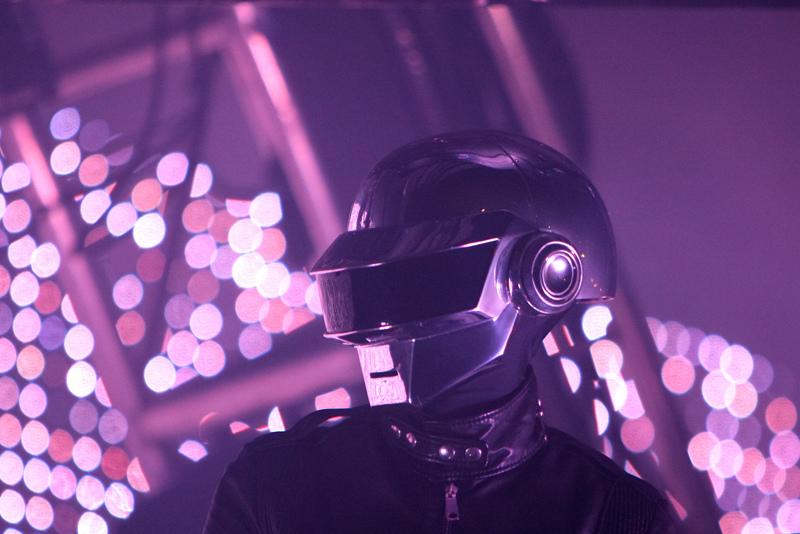
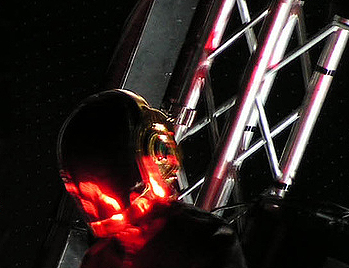
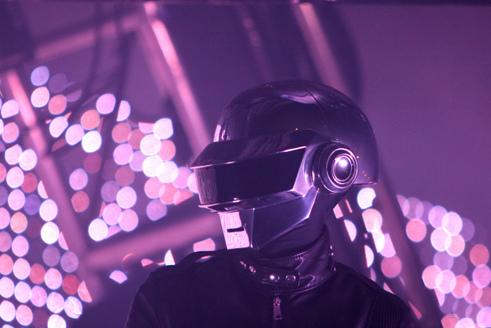
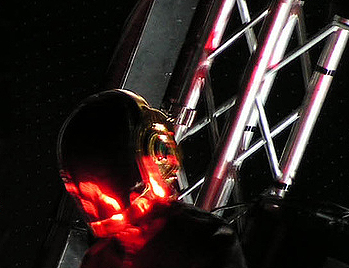

Daft Punk are a French electronic music duo formed in Paris in 1993 by Guy-Manuel de Homem-Christo and Thomas Bangalter.[5][6][7][8] They achieved popularity in the late 1990s as part of the French house movement, and had success in the years following, combining elements of house music with funk, techno, disco, rock, and synthpop.[2][6][7][9] They have worn ornate helmets and gloves to assume robot personas in most public appearances since 1999[10] and rarely grant interviews or appear on television. The duo were managed from 1996 to 2008 by Pedro Winter (also known as Busy P), the head of Ed Banger Records.
After Bangalter and Homem-Christo's indie rock band Darlin' disbanded, they began experimenting with drum machines and synthesisers. Their debut studio album Homework was released by Virgin Records in 1997 to positive reviews, backed by singles "Around the World" and "Da Funk". Their second album, Discovery, had further success, supported by hit singles "One More Time", "Digital Love" and "Harder, Better, Faster, Stronger". In March 2005, Daft Punk released their third album, Human After All, to mixed reviews, though the singles "Robot Rock" and "Technologic" achieved success in the United Kingdom. Daft Punk toured throughout 2006 and 2007 and released the live album Alive 2007, which won a Grammy Award for Best Electronic/Dance Album. They composed the score for the film Tron: Legacy, which was released in 2010 alongside its soundtrack album.
In 2013, Daft Punk left Virgin for Columbia Records, and released their fourth album, Random Access Memories, to acclaim; lead single "Get Lucky" reached the top 10 in the charts of 32 countries. Random Access Memories won five Grammy Awards in 2014, including Album of the Year and Record of the Year for "Get Lucky". In 2016, Daft Punk gained their first number one on the Billboard Hot 100 with the song "Starboy", a collaboration with The Weeknd. As of 2007, Daft Punk had sold over 7 million albums worldwide.[11]
 


